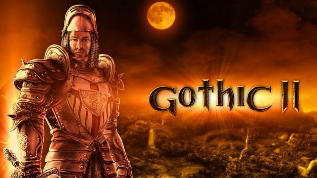
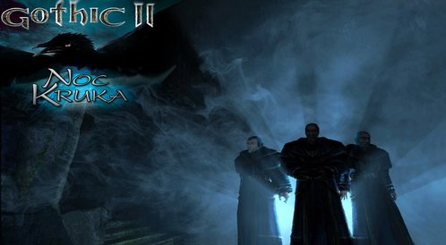

Gothic 2 + Noc Kruka
Gothic 2 + Noc Kruka - fabularna gra akcji, kontynuacja gry Gothic stworzona przez studio Piranha Bytes w 2002 roku. Gra została wydana przez JoWooD Entertainment, a polskim dystrybutorem gry została firma CD Projekt.
Fabuła
Fabuła Gothica II kontynuuje tę znaną z pierwszej części gry. Bezimienny bohater zostaje w magiczny sposób wyciągnięty spod gruzów Świątyni Śniącego – miejsca ostatniej batalii Gothica. Zbawcą jest nekromanta Xardas, który już na początku mówi o nowym zagrożeniu, jakie pojawiło się na wyspie Khorinis. Tym razem stała się ona celem potężnych istot – smoków, wezwanych tam przez Śniącego w chwili jego wygnania, a które stoją na czele armii ciemności.
Rozgrywka
Gothic II oferuje ogromny świat. Składa się on z trzech dużych lokacji, jakimi są okolice miasta portowego, Górnicza Dolina oraz jedna z czterech zaginionych świątyń boga ciemności Beliara, zwana Dworem Irdorath. W dodatku Gothic II: Noc Kruka pojawia się także Jarkendar. Pierwsza z nich to miejsce pełne gęstych lasów, polan, jaskiń. Trzeba jednak uważać, bo wbrew pozorom nie jest tu całkiem bezpiecznie. Kolejna lokacja to znana nam z pierwszej części gry Górnicza Dolina, zwana do niedawna Kolonią Karną. Prezentuje ona krajobraz całkowitego zniszczenia i spustoszenia. Z kolei Dwór Irdorath to miejsce tajemnicze i pełne grozy. Zapomniana Dolina Budowniczych, czyli Jarkendar, jest miejscem bardzo zróżnicowanym – znajdują się tu bagna, pustynie, plaże, płaskowyże i głębokie, malownicze doliny.

Gothic II: Noc Kruka – oficjalne rozszerzenie do gry Gothic II, wyprodukowane przez firmę Piranha Bytes i wydane przez JoWooD Productions w 2003 roku.
Fabuła dodatku
Gracz ma za zadanie pomóc Magom Wody w pokonaniu magnata (znanego z gry Gothic) o imieniu Kruk, którego celem jest zdobycie potężnego artefaktu, Szponu Beliara, ukrytego w świątyni Adanosa. Po zabiciu Kruka dostajemy do dyspozycji Szpon Beliara, który jest bezużyteczny dopóki nie poświęcimy go w jednej z kapliczek Beliara. W przypadku magów ognia Szpon Beliara zamienia się w jedną runę (mamy ich pięć do wyboru), którą można w każdej chwili zmienić na inną z dostępnych, oczywiście po uprzednim znalezieniu kapliczki Beliara. Wprowadzone w Nocy Kruka kapliczki poświęcone Beliarowi – patronowi szponu – umożliwiają, po złożeniu odpowiedniej ilości punktów życia, otrzymanie pewnej ilość złota. Gdy zdobędziemy Szpon Beliara mamy także możliwość ulepszenia go i dostosowania do własnych umiejętności, właśnie dzięki tym kapliczkom. Rozszerzenie zapewnia ok. 20-30 godzin zabawy i znacznie utrudnia rozgrywkę. Dodaje mnóstwo nowych możliwości, zadań, potworów i bohaterów niezależnych.
W dodatku pojawiają się m.in.: teren za górami na północnym wschodzie (Jarkendar), nowe potwory, gildie, przedmioty magiczne (warto tu wymienić Błędnego Ognika zamkniętego w amulecie, który może zostać towarzyszem gracza i poszukiwaczem cennych rzeczy), pasy, kostury, kilkanaście czarów i ponad 100 nowych bohaterów niezależnych. Znacznie został zwiększony poziom trudności, wszystkie potwory i postacie mają więcej siły i odporności. Do tego dochodzi mnóstwo nowych zadań, a także nowe sposoby wykonania tych już znanych. Dodatek został wydany w Polsce przez CD Projekt dość późno, bo w pierwszym kwartale 2005. W dodatku możemy również uczyć się języku budowniczych, dzięki którym możemy czytać magiczne tabliczki, które podniosą statystyki lub umiejętności.
Jarkendar
Jest to niezbadana część wyspy Khorinis, którą Bezimienny odkrywa po zdobyciu 4 kawałków ornamentu (pierwszy gracz otrzymuje od Laresa, gdy dojdzie z nim do wykopalisk, następne musi zdobyć sam) z kamiennych kręgów. Po połączeniu fragmentów ornamentu przez Magów Wody powstaje pierścień, otwiera portal do owej krainy, zwanej też Zapomnianą Doliną Budowniczych.
- Na wschodzie od obozu Magów Wody znajdują się bagna, w których znajduje się obóz bandytów. Bagna są niebezpieczne, występują tam: Bagienne trutnie, Bagienne golemy, Czarne gobliny, Jaszczury, Bagienne szczury, Węże Błotne, Krwiopijcy. W głębi bagna znajduje się Dom Uzdrowicieli – jedna z pięciu posiadłości Budowniczych. W środku obozu bandytów znajduje się Dom Wojowników.
- Na zachodzie znajduje się plaża, na której znajduje się obóz piratów. W pobliżu plaży można dostrzec wieżę, na której urzęduje grupa bandytów. Niedaleko wieży swoje legowisko ma tam Jack Aligator – myśliwy piratów. Koło obozu piratów gracz może natknąć się na takie potwory jak: Polne pełzacze, Topielce, Kretoszczury, Ogniste Jaszczury i Cieniostwory.
- Na południowym zachodzie znajduje się wielki pustynny kanion, pełen opuszczonych kopalń i jaskiń. W kanionie znaleźć możemy Dom Uczonych. Potwory jakie możemy spotkać to m.in. Wilki, Brzytwiaki, Pustynne Szczury, Pełzacze, oraz silniejsze: Ogary, Orków, Ognistego Demona, Ogniste Jaszczury oraz Trolle. Niedaleko Domu Uczonych znajduje się małe obozowisko Orków. Przez jedna z jaskiń można przejść z kanionu na bagna.
- Na północy przeważają tereny górsko-dolinne. Tam leżą niedaleko siebie: Siedziba Strażników Umarłych i Dom Kapłanów. Znajduje się tam także grobowiec Quahodrona (przywódcy kasty wojowników) oraz chatka Eremity. Na tamtejszych terenach można spotkać: Zębacze, Gobliny, Preriowe Ścierwojady, Orków, Bagienne szczury, Polne pełzacze.
